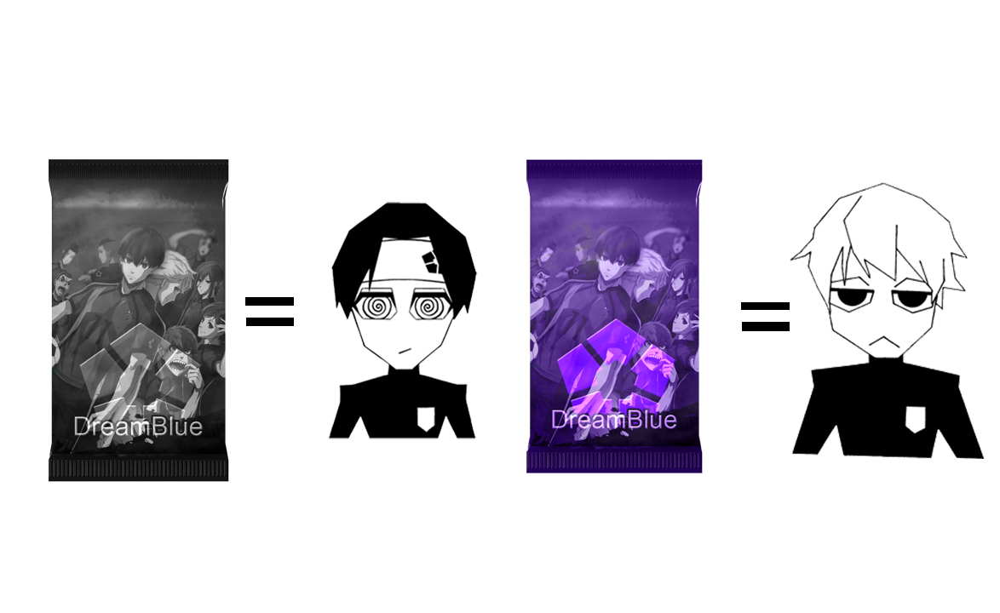
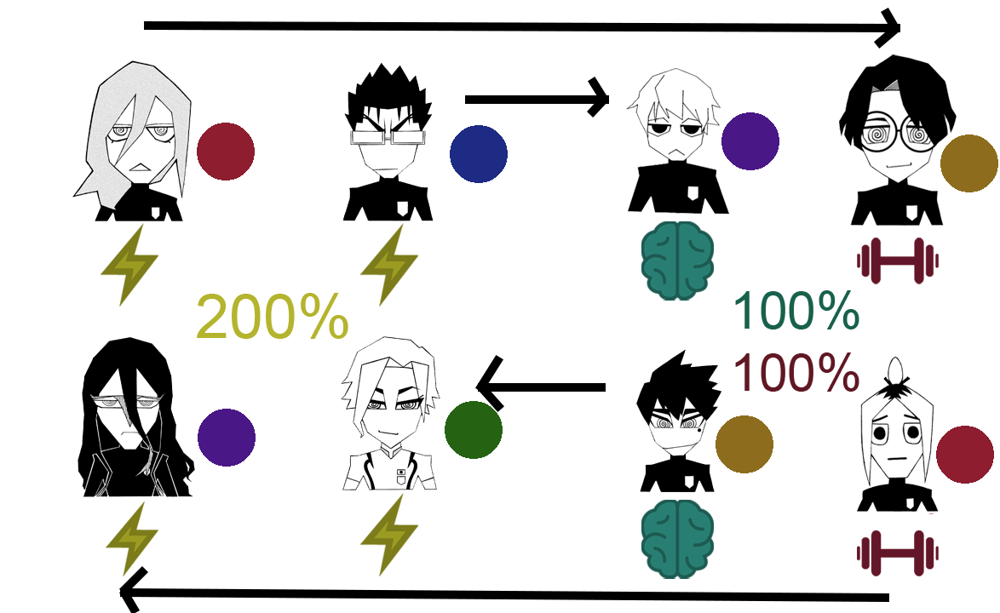

Bem vindo ao tutorial!
Esse site é um projeto individual com intuito de treinar/desenvolver programação e design, com tema principal baseado no Mangá/Anime Blue Lock
Inicialmente, você começa com 1 jogador comum de cada posição
Para obter jogadores melhores, você terá que jogar partidas ou fazer quests para ganhar dinheiro e abrir pacotes, quanto mais raro o pacote, melhor o jogador
Conforme você ganha melhores jogadores, seu time fica cada vez mais forte e pronto para aumentar a dificuldade!
Cada jogador tem funções,raridades e técnicas únicas

Uma técnica tem o mesmo poder/capacidade do que todas as outras,não tendo vantagem ou desvantagem quando se enfrentam, porém quando ténicas iguais se juntam em uma equipe adicionam um bônus de 50% por técnica igual
Escolha fazer um time totalmente focado na mesma técnica porém com alguns jogadores de menor raridade, ou uma equipe com ténicas distintas e jogadores com melhores raridades
Suba de ranking, enfrente os melhores times, ganhe os melhores jogadores, vença a copinha e se torne o mais egoísta de todos!